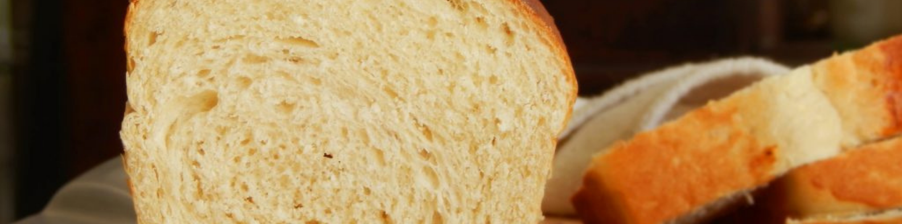
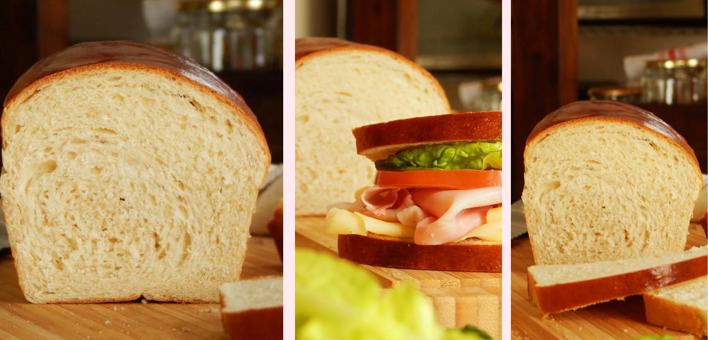
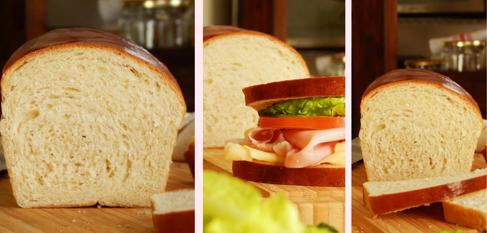
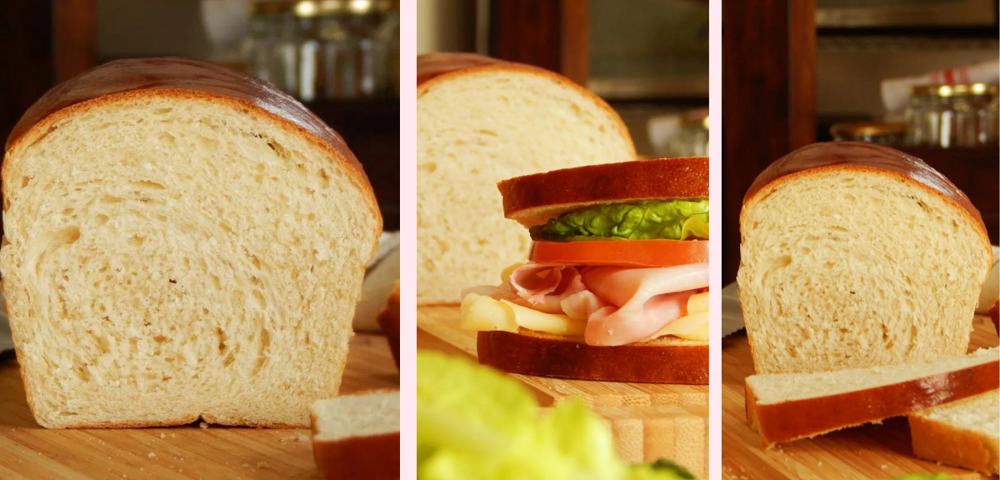

 

Pan Lactal Casero
Hacer Pan Lactal Casero es muy fácil y te lo mostramos en esta receta paso a paso.
Ingredientes.
- Harina de Trigo “000” 400 Gr.
- Leche 240 Ml.
- Manteca 20 Gr.
- Miel 30 Gr. (Se puede reemplazar por azúcar)
- Levadura Fresca 25 Gr. o Levadura Seca 5 Gr.
- Sal 7 Gr.
- Huevo 1 u. (Opcional para pintar)
Procedimiento.
- Colocar todos los ingredientes en un bowl, evitando que la levadura y la sal estén en contacto directo.
- Mezclar bien para unificar y bajar la masa a una superficie plana. Amasar bien, durante unos minutos, hasta lograr un bollo liso y parejo. Primero desgarrando la masa para integrar bien los ingredientes y luego más suave para dar calor y elasticidad.
- Colocar en el bowl, cubrir y dejar descansar 40 minutos o hasta doblar tamaño.
- Bajar el bollo, desgacificar haciendo presión con los dedos y estirar dando forma rectangular, teniendo en cuenta que el ancho no sea mayor al molde utilizado (el nuestro 25x10cm).
- Enrollar haciendo una leve presión en la masa y colocar dentro del molde previamente enmantecado/aceitado.
- Cubrir y dejar descansar en ambiente cálido hasta que la masa asome por encima del molde.
- Opcionalmente batir un huevo y pincelar toda la superficie antes de hornear.
- Hornear durante 20 o 30 minutos en horno precalentado a temperatura alta (220ºC).
- Dejar enfriar, desmoldar y disfrutar de este rico pan caserito y delicioso!!
